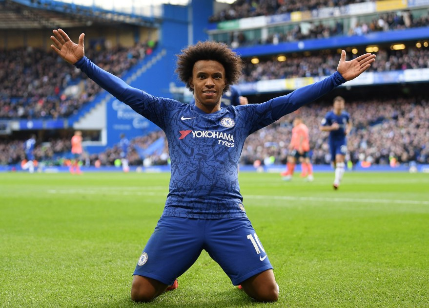
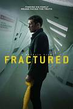
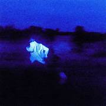
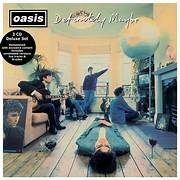

|

MENU
|
WILSITE
PERSONAL WEBSITE M. WILDAN AZKI P.
|
 (1).jpg) BERANDA
BERANDA
|
MENONTON SEPAK BOLA
-
Saya suka menonton sepak bola karena sejak saya kecil ayah saya
sering menonton sepakbola di TV dan saya suka menyaksikannya bersamannya.
Rasa suka saya terhadap sepakbola bertahan hingga sekarang, saya sangat
menikmati sepakbola karena di sepak bola bbanyak sesuatu hal hal tidak terduga
terjadi dan juga disepakbola
juga terdapat kesenian seperti permainan bola yang indah, operan bola yang
indah, ataupun taktik dari pelatih yang indah. Ada juga culture suporter
sepakbola yang membuat gairah semangat menonton sepakbola menjadi lebi asik dan
meriah.
bahkan saya dulu juga
pernah mengikuti sekolah sepak bola namun saya tidak lanjut karena saya lebih
fokus terhadap akademis saya.
-
Tim favorit saya adalah Real Madrid & Chelsea.
Alasan saya menyukai Real Madrid adalah karena idola saya saat kecil
adalah Cristiano Ronaldo, saya suka Real Madrid sejak
kecil dan saya sering menontonnya. Sejak kecil lah saya sudah menyukai
Real Madrid hingga saat ini. Dan alasan saya menyukai Chelsea
adalah karena dulu juga sering menonton pertandingannya sejak kecil dan
saya dulu suka melihat permainan dari Willian, selain itu saya
juga suka culture suporter Chelsea.


|
.jpg)
.png)
.png)
.png)
|
|

PROFIL
|
MENONTON FILM
-
Saya suka menonton film karena untuk mengisi waktu luang saya lebih memilih menonton
film daripada bermain game,
Saya adalah seseorang yang sangat menyukai film dengan genre thriller dan horor,
terutama yang memiliki alur cerita penuh kejutan atau plot twist. Saya menikmati
ketegangan dan rasa penasaran yang muncul saat menonton, karena membuat saya terus
menebak-nebak apa yang akan terjadi selanjutnya. Film dengan unsur misteri dan
kejutan di akhir cerita selalu berhasil membuat saya terpukau dan berpikir lebih
dalam tentang jalan ceritanya. Selain itu, genre ini juga memberi sensasi
menegangkan yang berbeda dan membuat pengalaman menonton terasa lebih seru serta
tidak mudah dilupakan. Terkadang saya juga menonton genre romance jika saya sudah
jenuh dengan genre
thriller dan horror.
-
FILM FAVORIT SAYA
- Alice in Borderland — Thriller, Sci-Fi, Action, Mystery
 alice.jpg)
- Fractured — Thriller, Mystery, Psychological

- Searching — Mystery, Thriller, Drama
 searcing.jpg)
- Forgotten — Thriller, Mystery, Crime, Psychological
 forgotten.jpg)
- The Frog — Drama, Mystery, Psychological

|
.png)
.png)
.png)
|
|

ALBUM
|
|
|
.png)
ARTIKEL
|
MENDENGARKAN MUSIK
-
Saya sudah menyukai musik sejak saya kecil karena ayah saya sering menyetel musik saat
di rumah maupun saat perjalanan di mobil. Dari situ, saya mulai menikmatinya, hingga
mendengarkan musik menjadi salah satu aktivitas favorit saya. Saya adalah orang yang
terkadang memerlukan musik untuk menaikkan mood sebelum beraktivitas. Jadi, saya
memiliki hobi mendengarkan musik karena bagi saya, musik adalah cara terbaik untuk
menenangkan pikiran atau memberikan semangat. Kadang-kadang saya bisa merasakan berbagai
emosi—dari kebahagiaan, ketenangan, hingga semangat—melalui musik. Musik sering menjadi
teman di berbagai suasana, baik saat santai, belajar, maupun merenung. Setiap lagu
memiliki makna tersendiri yang mampu membawa saya ke suasana hati yang berbeda. Genre
favorit saya adalah Alternative R&B, karena alunan musiknya terasa lembut, penuh emosi,
dan memiliki nuansa modern yang menenangkan. Suara vokalnya yang halus berpadu dengan
irama yang tenang namun dalam, membuat genre ini mampu menciptakan suasana yang hangat
dan menenangkan, sekaligus bisa memperbaiki mood setiap kali saya mendengarkannya.
-
PENYANYI DAN GROUP MUSIK FAVORIT SAYA
- FRANK OCEAN

- CIGGERETTES AFTER S
- DANIEL CAESAR

- OASIS

- NEW JEANS
|
P
.png)
.png)
.png)
|
|

BUKU TAMU
|